JavaScript can hide HTML elements.
NCT
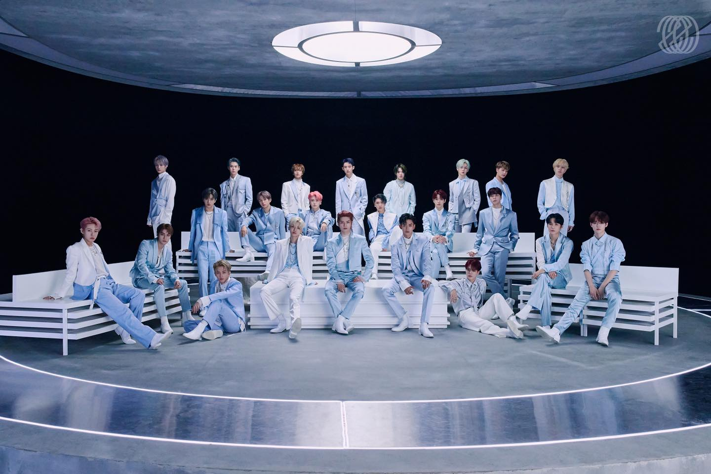
NCT取自「Neo Culture Technology（新文化技術）」的首字母，象徵著NCT是一組以全世界為舞台，具有開放性個擴張性，成員無上限的組合，目前有三個固定小分隊
NCT 127
泰一 1994年6月14日
泰可愛 : 出自NCT LIFE團結大會，節目組上的字幕，因為做甚麼都很可愛還跳了可愛操。
其他 : 飯圈還會用"一葛格"、"一哥"都是在說泰一。
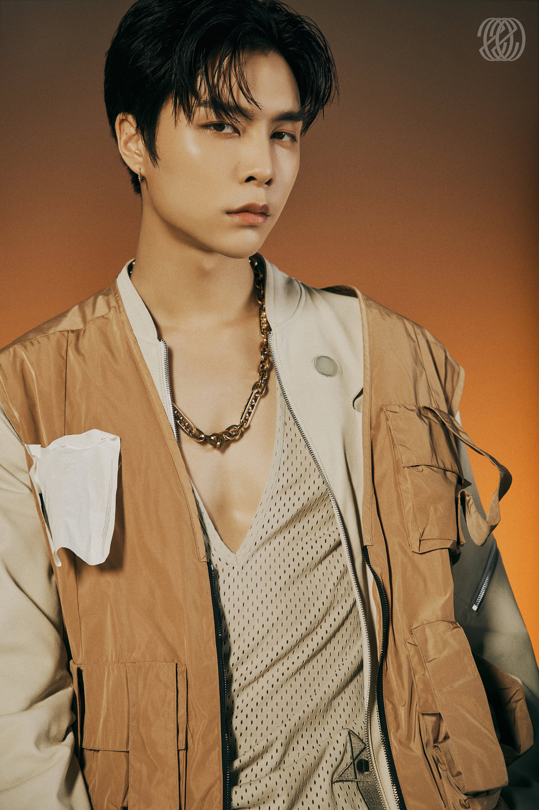
Johnny 1995年2月9日
囧尼 : Johnny的中文諧音
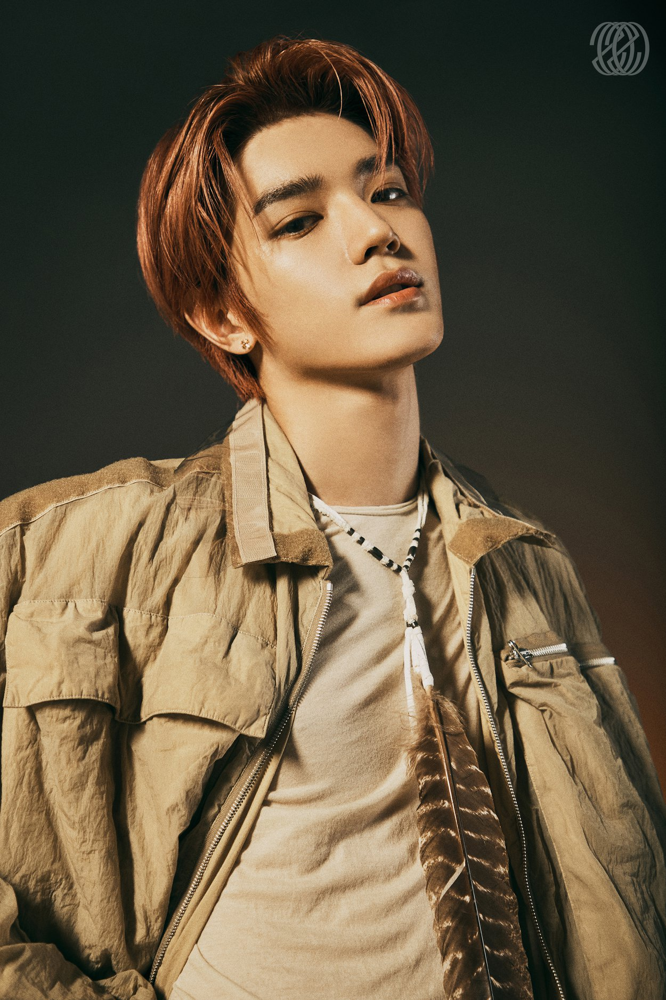
泰容 1995年7月1日
TY Track : 出道前出演過RV前輩的Be Natural，其中一句Rap詞是"TY Track TY Track"，那陣子成員們都會這樣叫他。
TY : TaeYong的縮寫。
絨絨 : 飯圈用暱稱，容容的可愛版本選字。
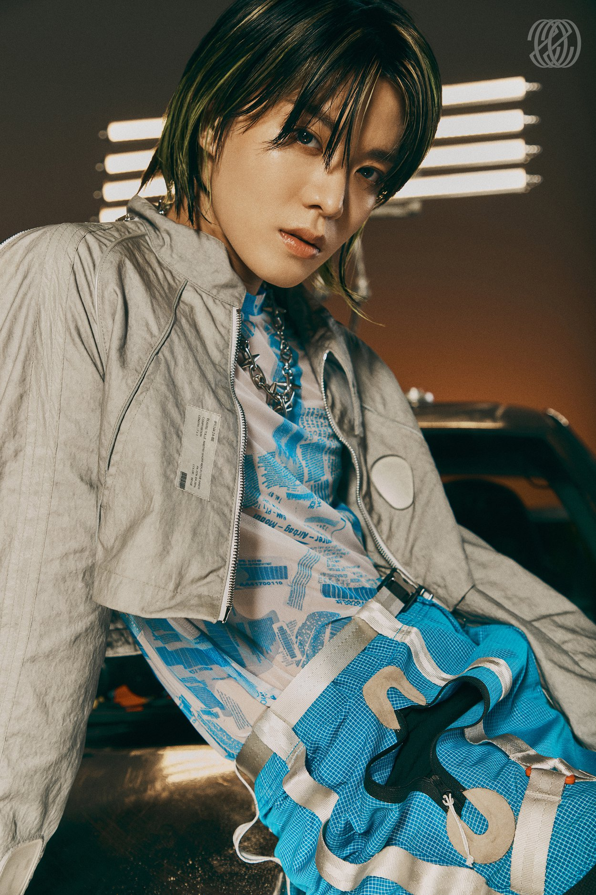
悠太 1995年10月26日
章魚小丸子 : 因為大阪出產章魚燒很有名，而悠太又是日本人，出道初期粉絲也常叫他丸子。
其他 :Healing Smile 山男人 中本桑、悠太桑
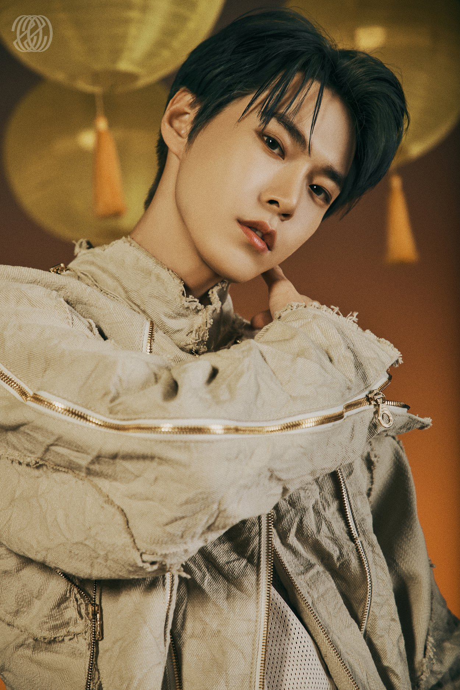
道英 1996年2月1日
豆英 : 名字諧音
雪貂、兔子 : 本人不認為像但是成員們都認證過道英長的像兔子，本人為了粉絲勉強接受這個暱稱。
貂老師 : 貂為長相相似，老師的部分是因為道英對粉絲很嚴格，簽售不接受撩還很會用人生道理教育粉絲，還會挑剔我們應援不夠整齊等等雜念。
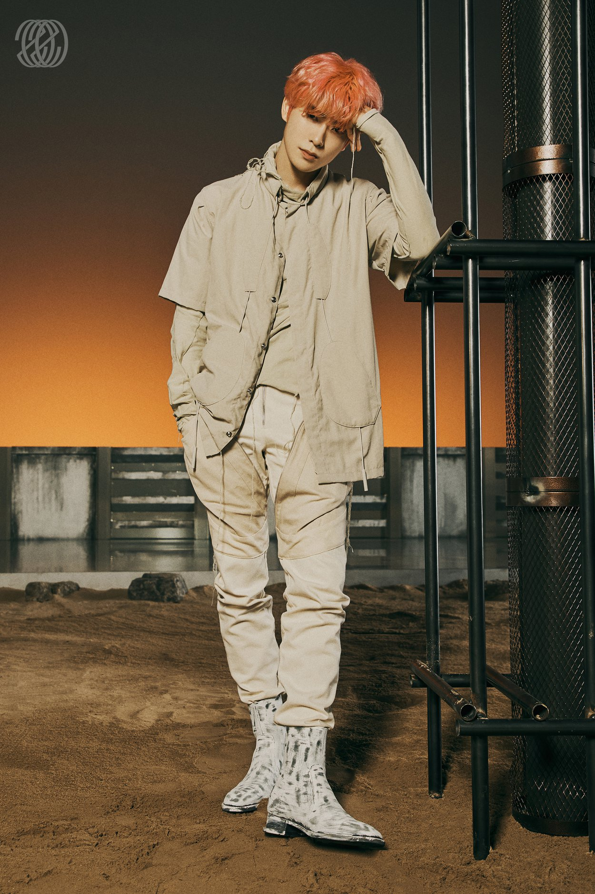
在玹 1997年2月14日
情人節男孩 : 2/14情人節出生因此被稱為Valentine Boy
學長 : 來自有名的"新東中學學長事件"，在電台收到一封告白信念到最後一句才發現主角就是自己，而且那位學妹本人還坐在下面，因此後來粉絲都叫他學長。
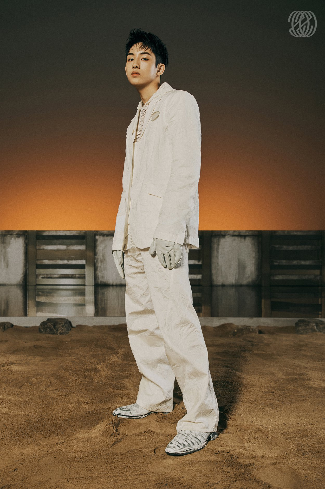
Winwin1997年10月28日
昀昀 : 是Winwin的中文諧音，本人自我介紹認證。算是官方用名了。
廷祐 1998年2月19日
小九 : 錕哥有跟廷祐說過粉絲會叫他小九，因為在廷祐出道前Rookies每個人都有一個編號(印在衣服上)，分別從1編到14號(泰容是1-志晟是14)，但是這個編號卻沒有9，明明當時只有13個人卻編到14號，因此大家認為有一個神秘的九號練習生，再加上飯拍等等粉絲就認為廷祐就是當時那個九號，因此叫他小九。
隱真瘋 : 直播裡成員們認證，本人有些疑惑還不太確定自己是，意思是看起來很正常實則是個瘋子的意思。
Mark 1999年8月2日
馬顆粒、顆粒 : Mark Lee的後面兩個字發音。
二十世紀最後的Swag : 1999年出生，本人也認證的形容詞。
SM的Rap之光 : 韓網媒體及節目認證。
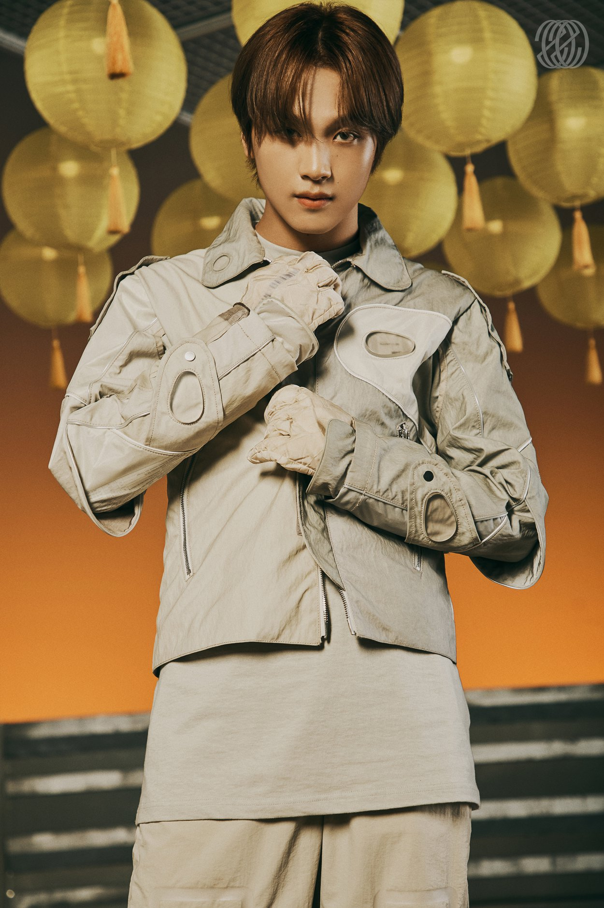
楷燦2000年6月6日
嘿燦妮 : 楷燦韓文發音的可愛版叫法取中文諧音。
小熊 : 本人也知道也會用熊的符號，因為長得像小熊，皮膚也比較偏健康膚色。
Full Sun : 楷燦最常用的暱稱 ! 因為楷燦這個名字有正直發光的含義，小太陽也是因此得來的。
NCT Dream
Mark 1999年8月2日
馬顆粒、顆粒 : Mark Lee的後面兩個字發音。
二十世紀最後的Swag : 1999年出生，本人也認證的形容詞。
SM的Rap之光 : 韓網媒體及節目認證。
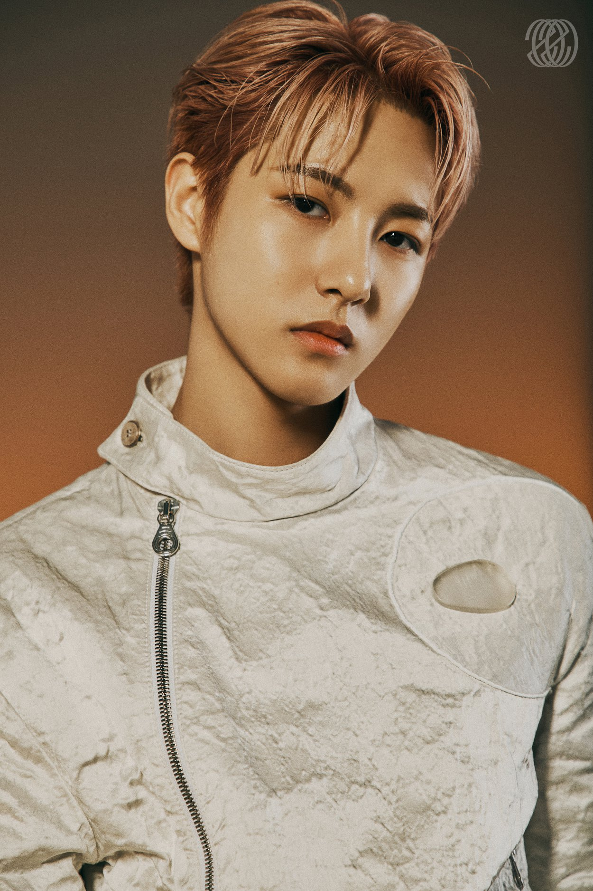
仁俊 2000年3月23日
純潔少年 : 本人自我介紹用詞。
東北大哥 : 出身中國東北吉林省，本人喜歡的暱稱。
肩膀流氓 : 來自隊友的爆料。
金手 : 很會畫畫非常有藝術天分，手很巧。
鎖骨美男 : NCT 2018宣告式直播被點名鎖骨很漂亮。
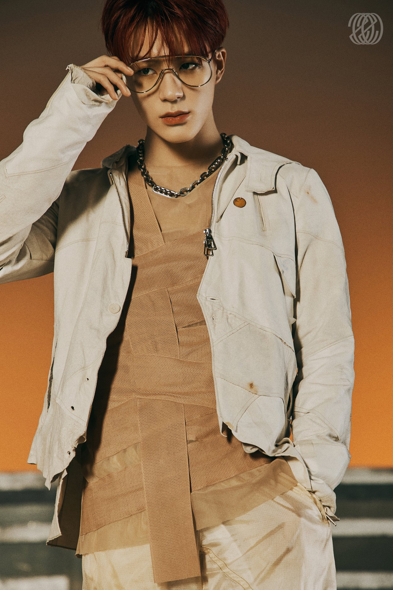
Jeno 2000年4月23日
No Jam (核無趣) : 說話太無聊沒意思被成員們戲稱。本人也認證平常也會用(悲傷的故事)。
楷燦2000年6月6日
嘿燦妮 : 楷燦韓文發音的可愛版叫法取中文諧音。
小熊 : 本人也知道也會用熊的符號，因為長得像小熊，皮膚也比較偏健康膚色。
Full Sun : 楷燦最常用的暱稱 ! 因為楷燦這個名字有正直發光的含義，小太陽也是因此得來的。
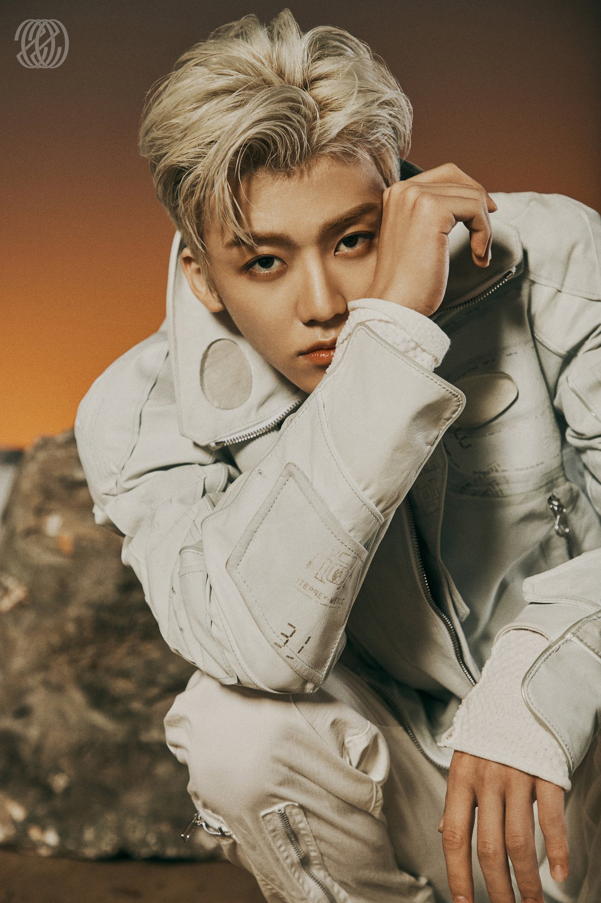
渽民 2000年8月13日
娜娜 : 姓"羅"，羅渽民，羅的韓文發音是Na，因此被粉絲稱為娜娜。
西珍妮向日葵 : Showcase上提過，真的太愛西珍妮了。(西珍妮是粉絲名)
辰樂2001年11月22日
樂樂 : 本人也會用的暱稱，名字的愛稱。
辰會長 : 家庭背景非常富裕，過去的照片也被成員和利特前輩認證為富人，因此成員們會稱他為辰會長。
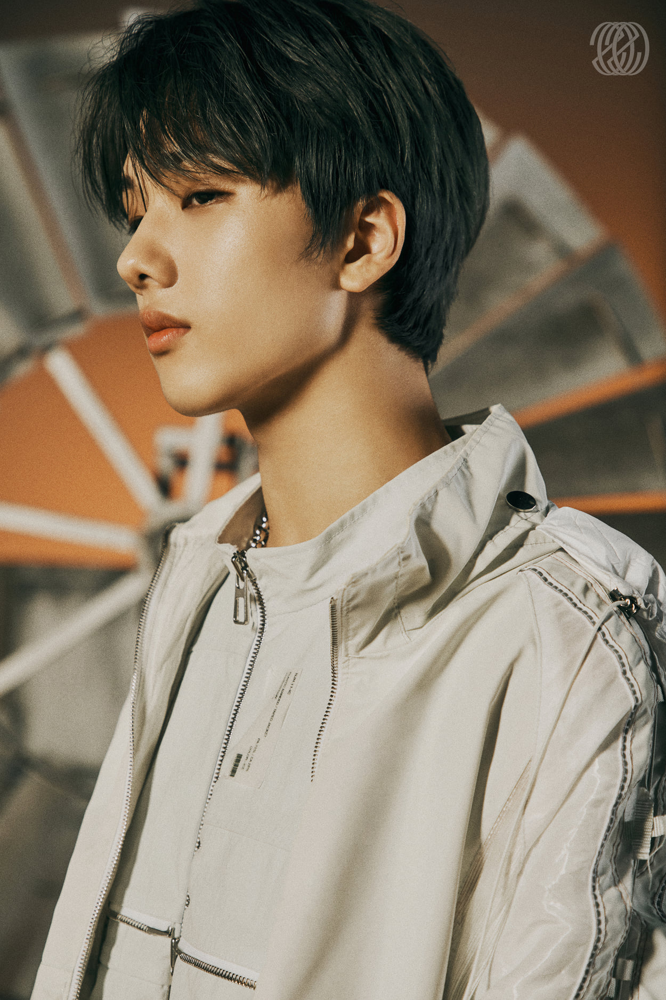
志晟 2002年2月5日
星星 : 出道前還沒正名時原本粉絲都叫他智星。
Way V
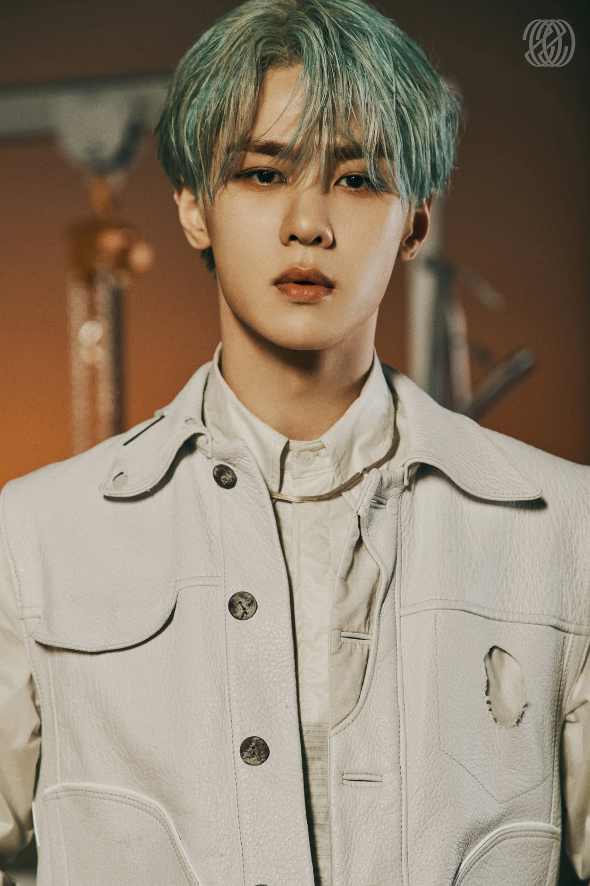
錢錕1996年1月1日
錕哥
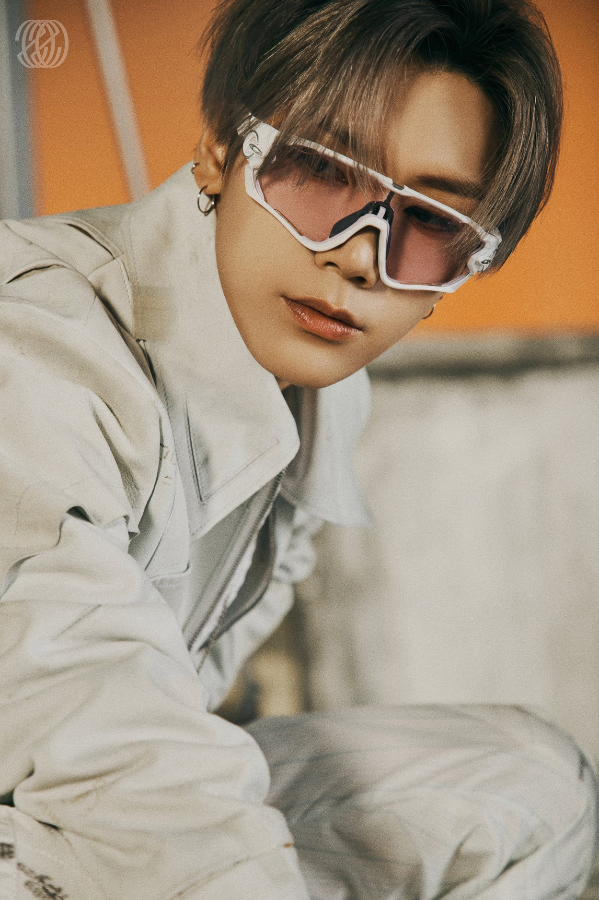
Ten 1996年2月27日
小十 : 飯圈用暱稱，因Ten是10。
七塔蹦 : 為泰文名字拼音的中文諧音。
疼疼 : 飯圈用暱稱，Ten和中文的疼發音相似。
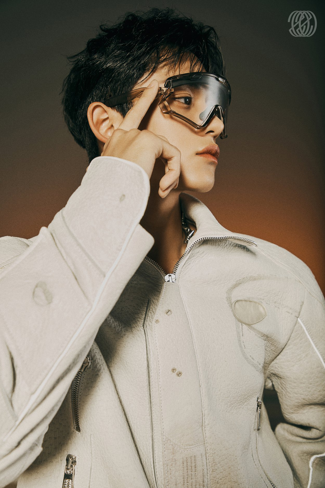
Lucas 1999年1月25日
卡卡 : 本人知道的粉絲用暱稱，取自名字諧音。
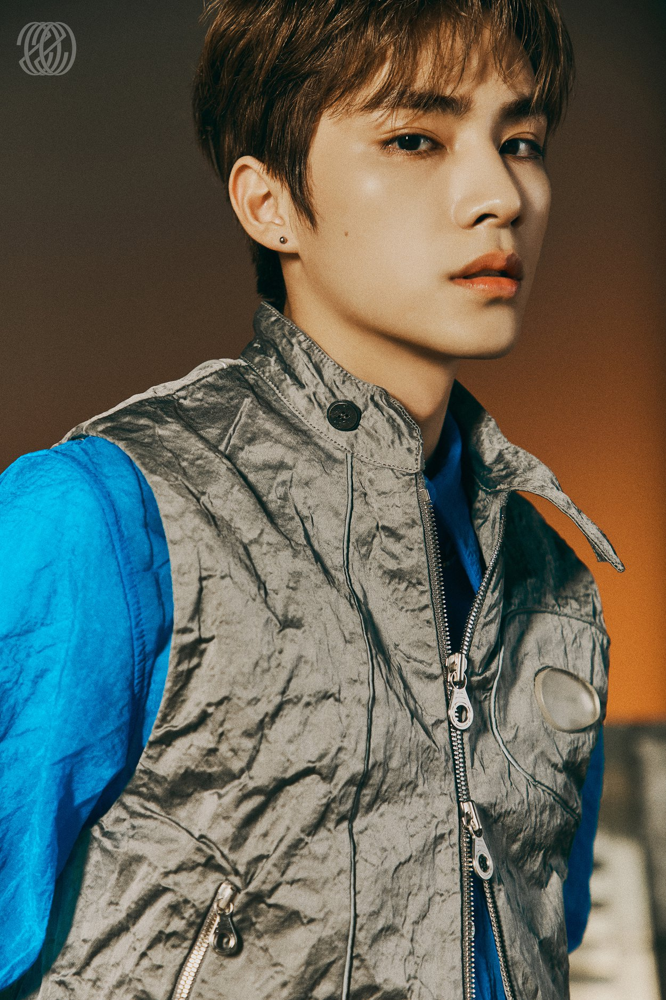
肖俊 1999年8月8日
鐵塊
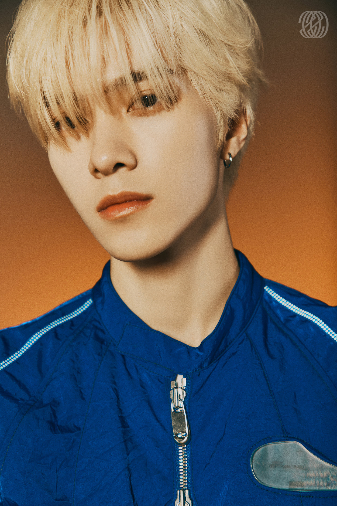
Hendery 1999年9月28日
黃瓜:本名叫黃冠亨
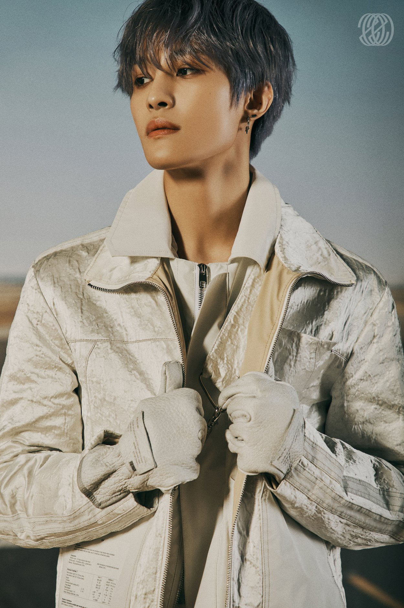
揚揚 2000年10月10日
羊羊
沒有固定小分隊
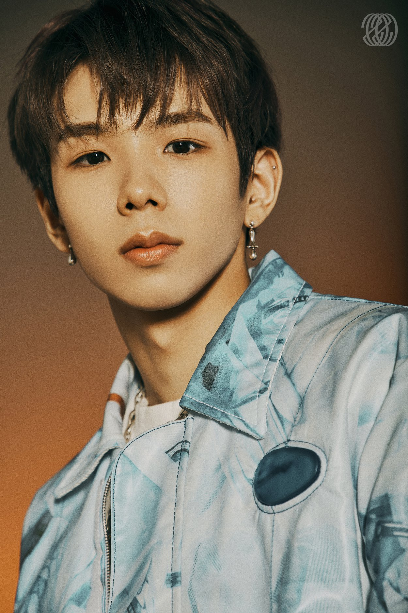
將太郎2000年11月25日
醬醬、小陀螺
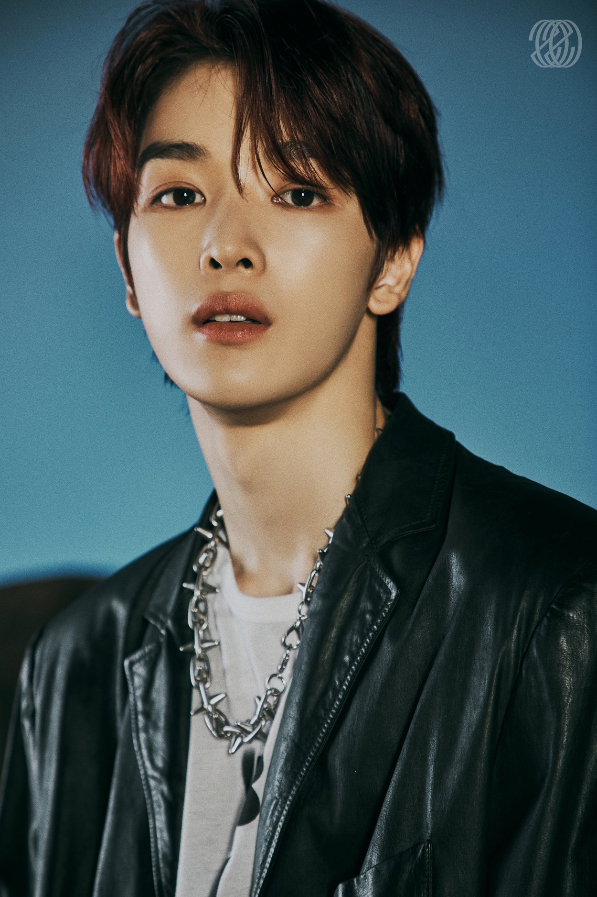
成燦 2001年9月13日